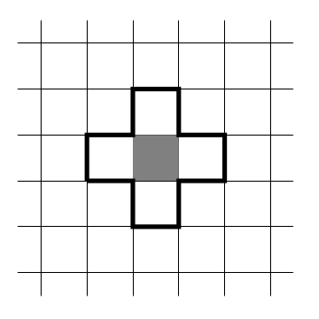
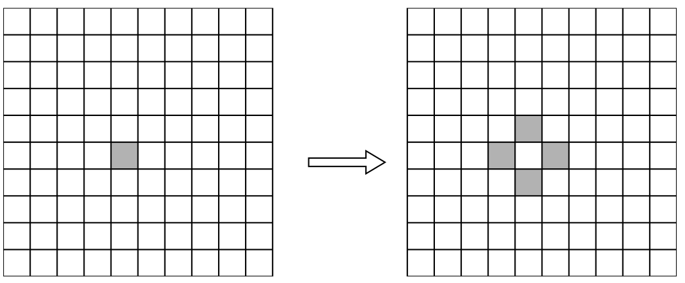
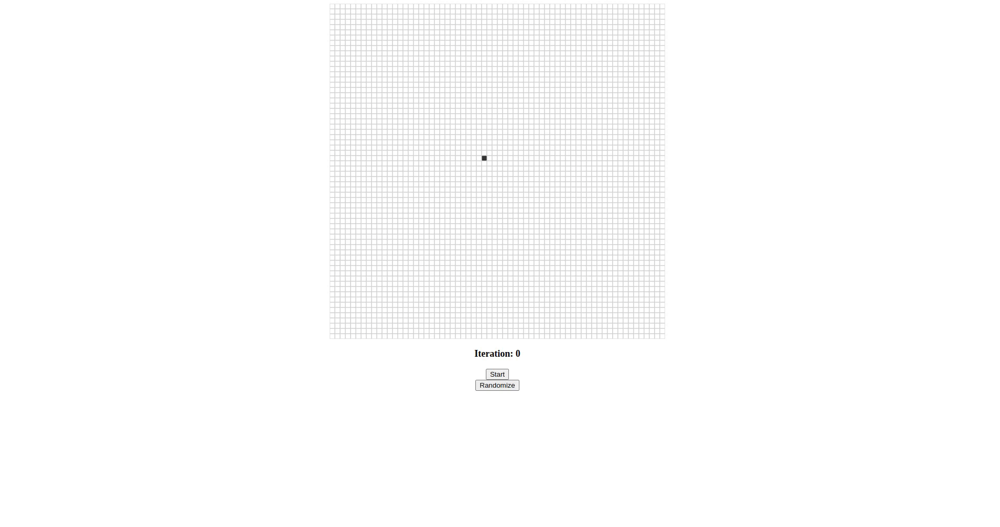

In the 1940s, John Von Neumann and Stanislaw Ulam wanted to design a computer able to self-repair.
In the real world an object can be produced only from a more complex object. Consider replicating a piece
of paper.
To create one, we need to have a more complex object, a printer,
the printer is a much more complex system than paper, and to create a printer, we need a lot of
smaller components which are themselves complex and so on.
However, this is not what happens in nature, cells are capable of self-replicating and self-repairing,
so scientists contemplated the idea of creating a system that has such capabilities.
Tackling such a problem is hard, so scientists decided to simplify the problem.
How to find the logical mechanisms for self-reproduction?
Finding an algorithm to achieve transcription and translation would be a great start, it would also be easier to
formalize these concepts in a discrete world.
That's when the idea of cellular automata was born.
A cellular automaton is a mathematical abstraction of the real world, a modeling framework in which everything is
discrete.
There are many examples of cellular automata, in this blog we will be looking at two that use a square
lattice (a grid).
Although the square lattice is the most common, it is possible to use a hexagonal lattice, a triangular lattice,
or
even a three-dimensional lattice (a cube).
It is also possible to make a simpler automaton, for example, a one-dimensional automaton.
Take a look at Wolfram's Automata.
In the first example, we will look at an automaton that uses the parity rule.
Here a cell has only two states, dead or alive (0 or 1), a dead cell is a white cell, and an alive cell is a black
cell. Each cell sums up the states of its four neighbors (up, down, left, right).
If the sum is even, the new state of the cell is 0, otherwise, it is 1.
Each cell sums up the states of its four neighbors, we can see the neighboring cells in the image. These are the four white cells that have a black border.
If we start with only one cell alive, the next generation will look so

Implementing the rule is pretty simple for the inner cells, but what about the cells on the edge?
How do we handle the cells that don't have four neighbors?
There are many ways to handle such cells (this is called boundary conditions) here are a few examples:
When applying the periodic boundary condition, the neighboring cells for the top left cell would be:
In this blog, we will be using the periodic boundary condition.
It is relatively easy to create a cellular automaton in p5.js. You can take a look at the complete code
here.
We have a grid of cells that saves the state of each cell, when one is clicked its state is flipped, and
when the start button is clicked the simulation starts.
The most important part is how to implement a certain rule for the automaton (in this case the parity rule), and
how
to enforce the boundary conditions (in this case the periodic boundary condition).
To implement the parity rule, we need to sum up the states of the four neighbors, and then check if the sum is
even or odd.
At each iteration, every cell needs to be updated, so we need to save the new state of each cell in a temporary
grid. Then we can sum up the four neighbors of each cell and check the parity.
There are many ways to sum up the four neighbors, the best and the most efficient one is to use the modulo
operator. By doing so, not only we can sum up the neighbors, but we can also enforce the periodic boundary.
for (let i = 0; i < gridVSize; i++) {
for (let j = 0; j < gridHSize; j++) {
iM = (i - 1) % gridVSize;
iP = (i + 1) % gridVSize;
jM = (j - 1) % gridHSize;
jP = (j + 1) % gridHSize;
grid[i][j].alive =
(gridCopy.at(iM).at(j).alive +
gridCopy.at(iP).at(j).alive +
gridCopy.at(i).at(jM).alive +
gridCopy.at(i).at(jP).alive) %
2;
}
}
Here gridVSize and girdHSize are the vertical and horizontal sizes of the grid
respectively.
The modulo operator ensures that when the index equals the size of the grid, it will be set to 0, so back at the
start of the grid.
On the other hand, the Javascript at function is used to access the element at a certain index, if
the index is -1, it will be set to the last element.
This is how the periodic boundary condition is enforced.
Let's take a look at the parity automaton in action. We will begin with a single cell alive approximately in the middle of a 64x64 grid.
The gif below shows the first 7 iterations of the parity rule
Despite the simplicity of the, rule we can already see complex shapes forming, a shape that "copies" itself
Let's see an example of a more complex initial state, take a look at this video, the initial shape is somewhat triangular.
We can see that the automaton generates the same shape multiple times in different positions.
Pause at iteration 4, the triangular shape is reproduced, there are now 4 shapes instead of one.
At iteration 12, the triangular shape is reproduced again, now there are 16 shapes instead of 4.
At different iterations we can see intricate patterns forming, this is the beauty of cellular automata, we began with a simple rule and a simple initial state, and we ended up with complex patterns.
If you watched the video till the end, you would have noticed that at iteration 32, the grid is empty, and all cells are white. This is not an error, this is the expected behavior of the parity rule given the grid size.
We can mathematically prove that a cellular automaton of size \( 2^k \) with periodic boundary conditions will reach a whole zero state at iteration \( 2 ^ {k - 1} \).
You can find proof in this book Cellular Automata Modeling of Physical Systems I won't get into the details here.
In our case, the grid size is \( 64 = 2^6 \), so the automaton will reach a whole zero state at iteration \( 2^{6 - 1} = 32 \).
This is an example of the fact that cellular automata is indeed a mathematical object, we can study it mathematically. Here is a randomly generated grid, watch the video till the end, you will see that the automaton reaches a whole zero state at iteration 32.
The most famous example of a cellular automaton is Conway's Game of Life. Unlike the parity automaton, the game
of life has a more complex rule.
The affected cells when determining the state of a cell are the eight
neighbors, not just the four we saw earlier, here is an image.
The rule is as follows:
If a cell is alive and has 2 or 3 alive neighbors, it stays alive, otherwise, it dies.
If a cell is dead and has exactly 3 alive neighbors, it becomes alive, otherwise, it stays dead.
The game of life has been studied and analyzed extensively, there is an online community of enthusiasts that
study the game of life, and they have found many interesting patterns and shapes.
Take a look at LifeWiki
Conway's Game of Life is a universal computer, which means that it can simulate any other computer. Think of any type of computation a computer can do, the game of life can do it too!
The first step to building a computer is to build logic gates, we can do so with glider guns.
This is a pattern that can create gliders which in turn is a smaller pattern that can "move" across the world.
The following video shows a glider gun in action, the shapes that are moving through the grid are the gliders
This gun keeps creating gliders (in our case we have a small grid so the gliders will eventually hit the gun and disturb the process), we can use multiple gliders to build logic gates, and then use these gates to build more complex circuits.
There are many mind-blowing videos online showing some examples of what can be done with the game of life. The fact that we can build a computer with something as simple as the Game of Life is a testament to the power of cellular automata.
The examples we saw above are theoretical, but cellular automata can be used to model real-world systems.
From simulating diffusion to modeling the spread of diseases, the spread of forest fires, growth models in
physics,
fluid mechanics, and many more, cellular automata is a powerful scientific tool.
Scientists have contemplated the implications of cellular automata, how could something so simple be able to
simulate real-world phenomena?
What does that say about the nature of reality? How could a discrete world be able to simulate a continuous
world?
Lots of questions are raised by cellular automata, and it is a fascinating field of study.
I will be writing more about cellular automata in the future, so stay tuned!